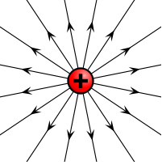
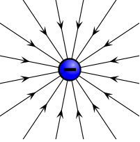
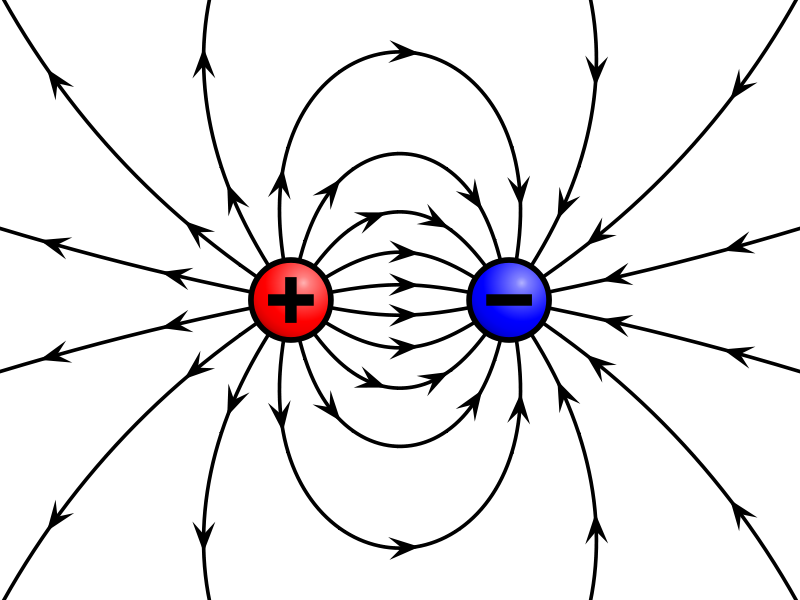

Concepto de Campo
Hasta ahora no hemos tenido la necesidad de definir el concepto de campo, pues la ley de atracción repulsión de cargas era suficiente para explicar muchos fenómenos físicos. Sin embargo, existen campos como el campo magnético que hacen necesario hacer referencia a este concepto.
Representación de campos

Los campos se representan con líneas curvas o rectas contínuas que pueden tener principio y fin, o ser ininterrumpidas.
Detección de campos

Para detectar un campo, necesitamos un detector de campos, es decir una entidad que pueda reaccionar al campo y manifestarlo de alguna manera que sea visible para el observador.
La masa, propia de todos los cuerpos, posee una propidead física llamada atracción gravitatoria o gravedad.
Debido a que el planeta tierra tiene masa, generará un campo en sus proximidades llamado Gravedad Terrestre.
Si dejamos un detector en su proximidad, por ejemplo, una manzana, esta será atraída por el campo gravitacional terrestre y se moverá en función de este.
Observe como la manzana oficia de Detector de Campo, pues nos permite ver efectos físicos sobre ella como, la aceleración por ejemplo.
Campo Eléctrico
Para el campo eléctrico se cumplen los mismos principios que para campo gravitacional, solo que con algunas particularidades. Por ejemplo:
- Convensionalmente se toma a la carga de prueba como positiva. De esa manera esta carga describirá la trayecotoria de las líneas de fuerza al "soltarla" o "dejarla libre" dentro de un campo.
- Miestras que el campo gravitacional es siempre de "atracción", el campo eléctrico puede ser de atracción o de repulsión según la polaridad de las cargas involucradas.
Si tomamos cargas eléctricas aisladas, es decir, lo suficiéntemente alejadas de otras cargas de manera que no sea apreciable su influencia, el campo eléctico tendrá las siguientes formas.
|  Campo eléctrico de una carga positiva |
 Campo eléctrico de una carga negativa |
Pero si las cargas que generan el campo están cerca, una de otra, generarán un campo eléctrico que será la suma o composición de los campos individuales.
|  Campo eléctrico generado por dos cargas próximas (Dipolo) |
Si dejamos libre nuestra carga de prueba positiva, esta seguirá las líneas de campo hasta llegar a la carga de destino.
Algunas distribuciones de carga permiten la generación de un campo eléctrico con distribución uniforme. El ejemplo más claro es el campo eléctrico entre las placas de un capacitor.

En este caso nuestra carga de prueba se dirigirá en línea recta hacia la placa negativa.
Evaluación
Aunque la evaluación es contínua, este tema tendrá una instancia de evaluación escrita.
Cuestionario de la Evaluación- ¿A qué llamaremos Campo?
- ¿Cómo se representa un campo eléctrico?
- ¿Por qué estamos seguros que el planeta tierra genera un campo gravitacional?
- ¿Cuál es la principal diferencia entre campos gravitacionales y campos eléctricos?
- ¿Qué trayectoria seguirá una carga de prueba, si está libre e inmersa en un campo eléctrico?
Volver al aula